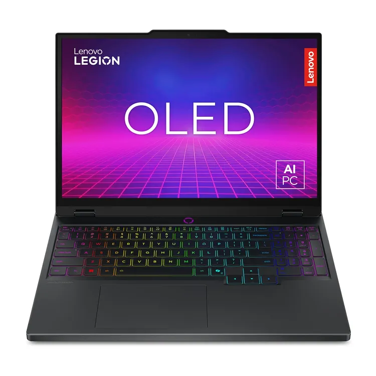

El computador se ha convertido en una de las herramientas más importantes de nuestro día a día; para trabajar, entretenerse, comunicarse, entre muchas cosas más. Estaremos revisando una de las marcas más importantes en la industria tecnológica de la computación.
En la actualidad, Lenovo se ha enfocado en el desarrollo de ordenadores con Inteligencia artificial integrada para consumidores tanto comerciales como pymes. Sin duda es una de las marcas pioneras en el desarrollo tecnológico de sus productos, especialmente los computadores.
"Aspiramos a llevar IA a todos, impulsando la transformación inteligente en todas las industrias y construyendo un futuro más inteligente para cada individuo y cada empresa". – Yuanqing Yang, presidente y CEO.

Los computadores Lenovo destacan por su compatibilidad, precio-rendimiento, ergonomía y durabilidad. Esta empresa cuenta con diferentes líneas de dispositivos enfocados a diferentes aplicaciones como el gaming, el trabajo, la edición de video o las tareas comunes.
Los modelos que más destacan son:
ThinkPad X1 Carbon: Ultraliviano, pero mantiene resistente, teclado excelente y buena autonomía. Es la referencia si necesitas algo profesional que aguante el uso rudo sin pesar tanto.
ThinkPad P Series: Son estaciones de trabajo móviles con GPU dedicada (Nvidia RTX). Es útil para personas que trabajan CAD, renderizado 3D o ciencia de datos. Es la opción más recomendada cuando necesitas potencia gráfica alta.
Legion Pro 7: Es la línea de gama alta del gaming. Tiene buena refrigeración con cámara de vapor, pantallas de alta tasa de refresco (hasta 240Hz) y GPUs Nvidia RTX.
Yoga 9i 2 en 1: Consumo más pulido. Pantalla OLED, bisagra con parlantes integrados (detalle curioso de diseño), pensado para quien quiere algo elegante para uso mixto trabajo/entretenimiento.
IdeaPad Slim / IdeaPad 5: Es la línea económica pero funcional. Cumple bien para uso básico a un precio bastante más accesible.
Encontrar esta versatilidad en una marca es difícil. Por eso es tan renombrada e importante en los avances tecnológicos de la actualidad.